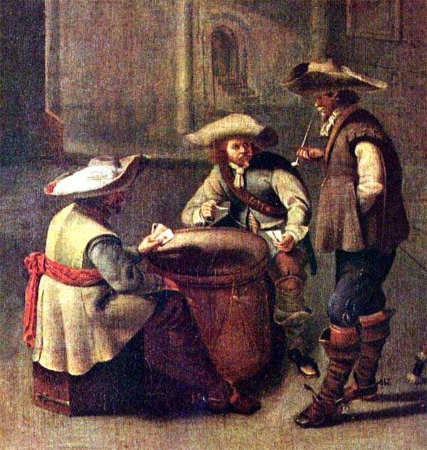
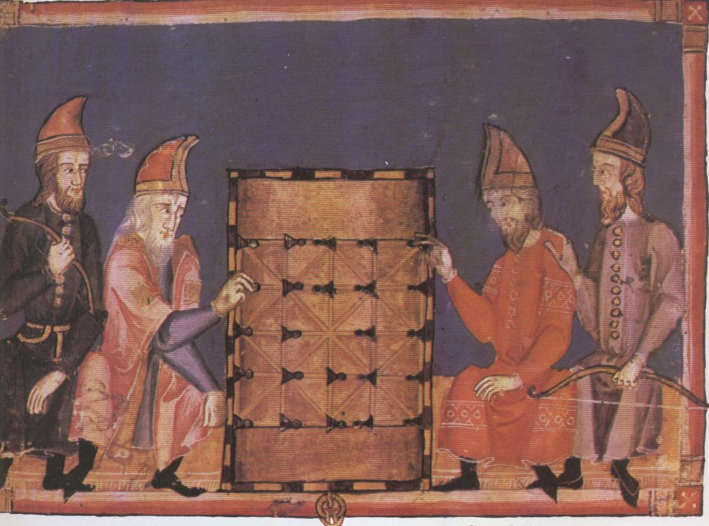

Damgeschiedenis
 Door Arie van der Stoep.
Door Arie van der Stoep.
Deze twee spelers, huidig wereldkampioen Alexander Schwarzman (links) tegen zijn uitdager in 2009 Alexander Georgiev, dammen op een bord met 100 ruiten, het grote bord. Waar komt dat grote bord vandaan?
Misschien uit Nederland. Vanaf de 14e eeuw tot de tweede helft van de 16e eeuw damden Nederlanders op het kleine bord met 64 ruiten. Tussen 1550 en 1600 kwam er iemand op het idee te gaan dammen op een bord met 100 ruiten. Dat sloeg aan, want al bleven de regels onveranderd, dammen op het grote bord was opwindender, je maakte sneller fouten.
Eerst damden ze met 2x15 schijven. Ergens tussen 1650 en 1700 gingen ze dammen met 2x20 schijven. Pools dammen noemden ze dat, dammen met 2x20 schijven. Eigenlijk was Pools dammen een scheldnaam, want Pools stond voor allerlei zaken die niet deugden. Werd je ergens van beschuldigd en ontkende je schuld, dan werd je vastgebonden op een Poolse bok en gemarteld. Ook al had je niks gedaan, je bekende al snel schuld. Het arme meisje dat zwanger was geraakt maar door haar minnaar in de steek was gelaten moest een Poolse poep laten. Een vergadering die uit de hand liep was een Poolse landdag. Niet alle dammers voelden er dus voor met 2x20 schijven te spelen, dat vonden ze maar raar.
De overstap van het kleine bord naar het grote bord was wel bij iedereen goed gevallen. Want in 1617 schreef een Noord-Hollander dat hij de mensen overal om zich heen zag dammen op een bord met 100 ruiten.

Pools dammen vond ook zijn weg naar het buitenland. Naar Frankrijk bijvoorbeeld. Hier zie je drie Franse prinsjes het spel spelen. Ze deden dat in het paleis van Versailles omstreeks 1690, waar hun grootvader Lodewijk XIV heerste. Het jongetje rechts schopte het zelf ook tot koning, hij werd de latere Filips V van Spanje.
Aan schaken deden ze niet aan het Franse hof, wel aan dammen. Schaken was in de 17e eeuw een vrij onbekend spel. Fransen speelden het wel, maar veel schakers waren er niet, dammen was veel populairder. In Nederland was schaken helemaal onbekend, schaken werd hier pas bekend tussen 1750 en 1800. Toen ging het ook hard; omstreeks 1900 was het hier populairder geworden dan dammen, vooral in de betere kringen. Schakers gingen toen een beetje neerkijken op het dammen, dat was toch maar een dom spelletje. Dat zit er nog steeds een beetje in, veel mensen zien schaken als een moeilijker en mooier spel dan dammen. Een vooroordeel heet dat, zo'n gedachte. Vóór zeg 1850 was dat dus helemaal niet het geval. Integendeel, dammen werd beschouwd als een mooi spel.
Van dammende prinsjes hoef je dus niet op te kijken. Dammen was iets voor mensen met vrije tijd, en alleen rijke mensen hadden vrije tijd. Die hadden personeel dat voor ze werkte, zoals een koetsier, een of meer dienstmeisjes, tuinlieden en een kokkin. Dat personeel zelf damde niet. Hetzelfde zag je in het leger: officieren damden, soldaten dobbelden en kaartten.

Verder terug in de tijd
In 1550 damden de Nederlanders dus op het kleine bord. Dat gebeurde overal in Europa. En waarschijnlijk ook in Azië en in Afrika. Ook in Amerika? Dat weten we niet.
Hier zie je een Duitser (links) dammen tegen een Vlaming of een Fransman. Dammen? Schaken toch! Nee, dammen. Keurvorst Johan Frederik van Saksen was gevangen genomen door keizer Karel V en werd opgesloten in een gevangenis in Brussel. Hier damt hij met schaakstukken tegen zijn cipier, het is duidelijk een damstelling. Je ziet, dammen was een tijdverdrijf van vorsten. Het tafereeltje werd in 1549 geschilderd door de Nederlander Anthonis Mor.
Dammen op het kleine bord gebeurde sinds de 14e eeuw, zeg vanaf 1350. Slaan was toen nog niet verplicht. Die regel ontstond een eeuw later ergens in Europa, waar weten we niet. Dammen zonder slagplicht leefde voort tot in de 17e eeuw. Johan Frederik kan dus hebben gedamd met of zonder slagplicht.
 Datzelfde geldt voor de jonge vrouw en de jonge man op het plaatje, een miniatuur uit een Frans manuscript van 1470. De vrouw is een Ierse prinses, haar tegenstander een hooggeplaatste ridder die haar begeleidt naar de koning met wie zal gaan trouwen. Je ziet, alweer spelen ze met schaakstukken, maar de stelling is een damstelling.
Datzelfde geldt voor de jonge vrouw en de jonge man op het plaatje, een miniatuur uit een Frans manuscript van 1470. De vrouw is een Ierse prinses, haar tegenstander een hooggeplaatste ridder die haar begeleidt naar de koning met wie zal gaan trouwen. Je ziet, alweer spelen ze met schaakstukken, maar de stelling is een damstelling.
Dammen op het kleine bord, waar komt dat vandaan? Dat weten we niet. We weten alleen dat het spel in de 14e eeuw ergens in Europa van dit lijnenbord  werd overgeplant op het schaakbord. Bij die gelegenheid kreeg het de naam damspel, het eerst in Frankrijk.
werd overgeplant op het schaakbord. Bij die gelegenheid kreeg het de naam damspel, het eerst in Frankrijk.
Dammen op het lijnenbord was bijzonder geliefd, vooral in Frankrijk. Je leest in allerlei boeken en op allerlei sites dat juist het schaakspel zo populair was, maar het is de vraag of dat waar is. Historisch onderzoek naar speciaal de populariteit van schaken en dammen in de middeleeuwen in Spanje, Frankrijk en Engeland levert eenzelfde beeld op: dammen was belangrijker dan schaken. En niet zo'n beetje ook, dammen was héél veel belangrijker.
Er staat in boeken en op sites wel meer dat door modern onderzoek onderuit wordt gehaald. Dammen op het lijnenbord heet alquerque. Dat was een spel zonder promotie, dus zonder dam, kun je overal lezen. Al die boeken en sites praten elkaar klakkeloos na, onderzoek is er nooit bij.


Nog verder terug in de tijd
Hier zie je twee Spanjaarden dammen in 1283. Je ziet weer het lijnenbord. Hoeveel eerder speelden dammers al op zo'n bord? We weten het niet. Bijna zeker al in het jaar 500 na Christus. Misschien al langer, want we kennen inscripties van dit bord in steen. Archeologen hebben echter altijd moeite om te bepalen hoe oud een inscriptie is. Daarom moeten we zeggen: zeer waarschijnlijk was dammen bekend omstreeks 500. Maar of het ouder was, en hoeveel eeuwen, dat weten we niet. Ook niet waar ons spel is bedacht. Ergens binnen het Romeinse rijk, zo suggereert het meest recente onderzoek. Hopelijk vinden we bij voortgaand onderzoek aanwijzingen voor die gedachte.